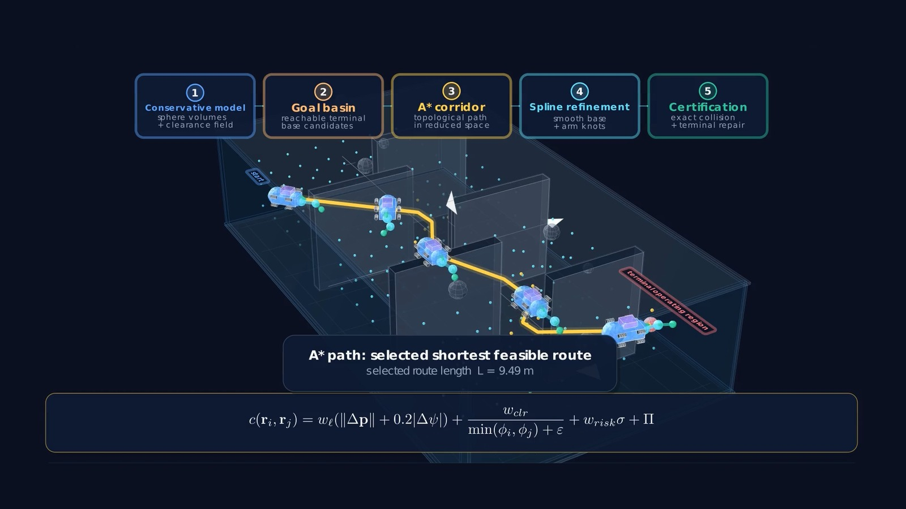

Problem
Underwater vehicle–manipulator systems must navigate cluttered environments while maintaining collision clearance, base stability, arm feasibility, and terminal tool reachability. Direct high-dimensional planning is expensive and often produces irregular base and arm motion.
Hierarchical architecture
MANTA separates global topology selection from continuous vehicle–arm refinement. A reduced-state global planner identifies distinct free-space corridors, then a manipulation-aware optimizer refines base and arm motion under collision, smoothness, clearance, and terminal feasibility constraints.

Evaluation evidence
- Confined 3D environments with offset windows, forked tunnels, vertical shafts, and narrow-versus-wide route alternatives.
- Comparisons against high-dimensional sampling-based planners.
- Metrics covering success, clearance, planning time, base path length, curvature energy, arm motion, and terminal tool error.
Tracking and station keeping
The planning layer is paired with learning-based trajectory tracking and station-keeping control for the underwater vehicle, enabling evaluation of the full planning–control pipeline.